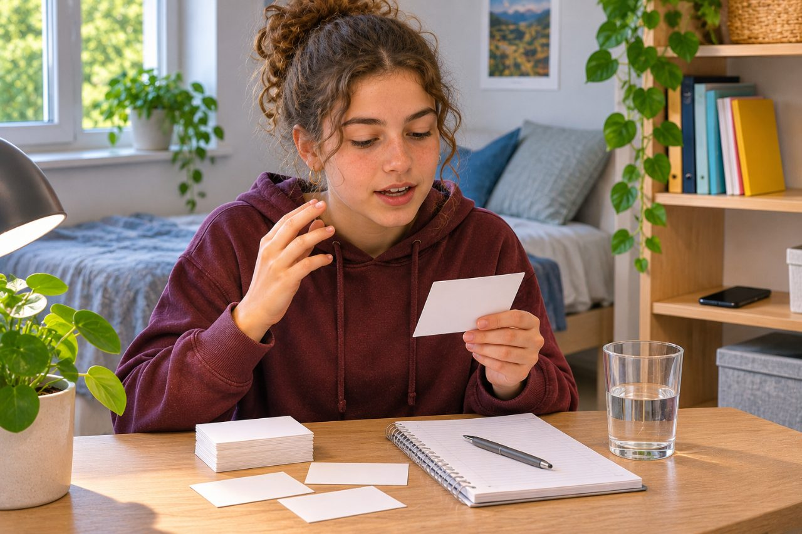

Lernen verändert das Gehirn

Denk mal nach: Selin lernt für die Probe. Was macht sie richtig? Achte auf den Platz, das Handy und die Karteikarten.
Du lernst jeden Tag – nicht nur in der Schule. Lernen heißt: neues Wissen speichern, Zusammenhänge erkennen, Fähigkeiten erwerben und das eigene Verhalten ändern. Was du gelernt hast, bewahrt dein auf.
Dein Gehirn besteht aus etwa 90 Milliarden . Sie sind miteinander verbunden und schicken sich Signale. Lernst du etwas Neues, bilden die Nervenzellen neue – oder vorhandene Verknüpfungen werden kräftiger. So entsteht ein immer größeres, dichteres Netz.
Dieses Netz sieht bei jedem Menschen anders aus. Lernen ist deshalb : Jeder lernt auf seine eigene Weise – und zwar ein Leben lang.
Du willst lernen, mit drei Bällen zu jonglieren. Noch hast du es nie geübt: Für diese Bewegung gibt es im Gehirn erst wenige, dünne Verknüpfungen. Die Signale von den Augen kommen nicht bis zu den Händen durch – die Bälle fallen. Tippe auf „Üben“.
MERKE
- Lernen heißt: neues Wissen speichern, Zusammenhänge erkennen, Fähigkeiten erwerben und das Verhalten ändern. Wir lernen ein Leben lang.
- Beim Lernen bilden Nervenzellen neue oder veränderte Verknüpfungen. Je mehr man übt, desto größer und dichter wird das Netz.
- Jeder Mensch lernt anders: Lernen ist individuell.
Lernen hat viele Seiten
Tippe links eine Seite des Lernens an und dann rechts das passende Beispiel.
Was passiert beim Lernen?
Drei Gedächtnisse
In jeder Sekunde melden deine Sinnesorgane viele : Bilder, Geräusche, Gerüche, Berührungen. Würde das Gehirn alles speichern, wäre es völlig überfordert.
Deshalb arbeitet es wie ein : Vieles nimmst du gar nicht wahr. Nur ein Teil gelangt ins Gedächtnis. Fachleute beschreiben das Gedächtnis mit einem Modell aus drei Teilen – rechts und in der Animation unten.
- (auch ): hält Sinneseindrücke wenige Sekunden. Vieles wird gelöscht oder überschrieben.
- : hält wichtige Informationen etwa 20 Minuten. Es hat wenig Platz – Neues Altes.
- : speichert lange, manches ein Leben lang.
Weiter kommt nur, was bekommt, Gefühle weckt, zu Bekanntem passt – oder durch und Übung gefestigt wird.
Merktest: Wie viel behältst du?
Du siehst 20 Sekunden lang 12 Bilder. Danach tippst du an, welche dabei waren. Im zweiten Durchgang nutzt du eine : Die Bilder sind geordnet, du sprichst leise mit und wiederholst. Vergleiche die Ergebnisse! Es zählt das Mitmachen, nicht die Punktzahl.
Tippe auf „Durchgang 1“. Halte dein Gerät so, dass du alle Bilder gut siehst. Am Ende hast du zwei Ergebnisse zum Vergleichen.
Punkte: Jedes richtig erkannte Bild bringt einen Punkt, jedes falsch angetippte kostet einen.
MERKE
- Das Gehirn filtert die Sinneseindrücke. Nur ein Teil gelangt ins Gedächtnis.
- Ultrakurzzeit-Gedächtnis: wenige Sekunden. Kurzzeit-Gedächtnis: etwa 20 Minuten, wenig Platz. Langzeit-Gedächtnis: lange, manches ein Leben lang.
- Ins Kurzzeit-Gedächtnis kommt, was Aufmerksamkeit bekommt, positive Gefühle weckt oder mit Bekanntem verknüpft ist. Ins Langzeit-Gedächtnis kommt es durch Interesse, Wiederholung, Übung und Erinnern.
In welchem Gedächtnis landet das?
Tippe eine Karte an und dann das passende Gedächtnis.
Was kommt weiter?
Tippe zuerst auf eine Lücke, dann auf das passende Wort. Zwei Wörter bleiben übrig.
Erkläre mit dem Modell ✨ KI prüft
Schreibe ganze Sätze oder Stichpunkte. Die KI achtet nur auf den Inhalt, nicht auf die Rechtschreibung.
Lernen will gelernt sein
Ob das Lernen klappt, hängt auch davon ab, wo und wie du lernst. Gut geht es an einem ruhigen Platz, mit Interesse und – und ohne . Nach dem Essen wartest du besser ein bisschen. Es hilft auch, über das Gelernte zu sprechen.
Schwer wird es bei Lärm und Unruhe, wenn Handy, Fernseher oder Musik ablenken, bei Stress, wenn du dich nicht wohlfühlst, wenn deine Gedanken abschweifen, dich Probleme beschäftigen oder du keine Lust hast.
Wissen kommt auf verschiedenen Wegen ins Gehirn: Wir lesen, hören, sehen, sprechen und handeln. Diese Wege heißen .
Eine bekannte sagt, wie viel davon hängen bleibt. Die Zahlen sind keine genauen Messwerte. Aber sie zeigen: Je mehr du selbst machst und je mehr Kanäle du kombinierst, desto mehr behältst du. Probiere es unten aus.
Du willst 10 neue Englisch-Vokabeln lernen. Wähle einen Lernkanal und sieh, wie viele Vokabeln nach der Faustregel hängen bleiben. Probiere alle sechs aus.
| Lernkanal | So lernst du die Vokabeln | Es bleibt hängen (Faustregel) |
|---|
MERKE
- Das Lernen fördern: ruhiger Platz, Interesse, Konzentration, kein Zeitdruck, nach dem Essen kurz warten, den Stoff einteilen, wiederholen, über das Gelernte sprechen.
- Das Lernen erschweren: Lärm und Unruhe, Ablenkung durch Handy, Fernseher oder Musik, Stress und Zeitdruck, Unwohlsein, abschweifende Gedanken, Probleme, keine Lust.
- Lernkanäle (Faustregel): lesen 10 %, hören 20 %, sehen 30 %, hören und sehen 50 %, selbst sagen 70 %, selbst tun 90 %. Am besten mehrere Kanäle kombinieren.
Lerntipps sortieren
Hilft das beim Lernen – oder stört es? Tippe eine Karte an und dann die passende Spalte.
Lernkanäle
Tippe zuerst auf eine Lücke, dann auf das passende Wort. Zwei Wörter bleiben übrig.
Vergessen, wiederholen – dein Lernplan
Was du nur einmal lernst, vergisst du schnell wieder. Das zeigt die : Ohne Wiederholung ist schon nach einem Tag ein großer Teil weg.
Wiederholst du den Stoff nach einem Tag, nach ein paar Tagen und nach einer Woche, bleibt viel mehr erhalten. Mit jeder Wiederholung vergisst du langsamer – das Wissen wandert ins Langzeit-Gedächtnis.
Deshalb lohnt sich ein : Du teilst den Stoff in kleine Portionen und verteilst sie auf mehrere Tage. Jeden Tag wiederholst du kurz, was du schon gelernt hast. So hast du am Ende keinen Zeitdruck.
Ein Beispiel für die Probe zum Nervensystem steht unter dem Diagramm.
Ohne Wiederholung fällt die Kurve steil ab. Schiebe den Regler nach rechts: Was passiert mit 1, 2 und 3 Wiederholungen?
Beispiel: Lernplan für die Probe zum Nervensystem
| Montag | Modul 1 lernen: Lernkarten durchgehen, die Schritte vom Reiz zur Reaktion laut aufsagen. |
|---|---|
| Dienstag | Modul 1 kurz wiederholen. Modul 2 lernen: das Gehirn selbst zeichnen und beschriften. |
| Mittwoch | Module 1 und 2 wiederholen. Modul 3 lernen: das Gedächtnismodell jemandem erklären. |
| Donnerstag | Alles wiederholen: Lernkarten, Kreuzworträtsel, Profi-Checks. Nichts Neues mehr. |
| Freitag | Probe – du bist vorbereitet. 💪 |
Jeden Tag etwa 20 bis 30 Minuten, an einem ruhigen Platz, das Handy in einem anderen Zimmer.
MERKE
- Ohne Wiederholung vergisst man das Gelernte schnell (Vergessenskurve).
- Nach jeder Wiederholung bleibt mehr erhalten, und man vergisst langsamer.
- Ein Lernplan teilt den Stoff in Portionen, verteilt ihn auf mehrere Tage und plant Wiederholungen ein.
So entsteht ein guter Lernplan
Die Probe ist in einer Woche. Bringe die Schritte mit den Pfeilen in eine sinnvolle Reihenfolge.
Gib gute Tipps ✨ KI prüft
Schreibe ganze Sätze oder Stichpunkte. Die KI achtet nur auf den Inhalt, nicht auf die Rechtschreibung.
Training
Löse das Kreuzworträtsel
Tippe in ein Kästchen und schreibe. Tippst du ein Kästchen zweimal an, wechselt die Richtung. Ä schreibst du als AE, Ü als UE. Hängst du fest? Bei jeder Frage hilft 💡 Tipp – erst ein Hinweis, dann der Anfangsbuchstabe. Mit 📋 Wörter zeigen siehst du alle Lösungswörter.
Kreuze an
Profi-Check, Lernkarten und Regelheft
Gedächtnis und Lernen
Lernen heißt: neues Wissen speichern, Zusammenhänge erkennen, Fähigkeiten erwerben, das Verhalten ändern. Dabei bilden Nervenzellen neue oder veränderte Verknüpfungen. Jeder lernt anders.
Gedächtnismodell: Das Gehirn filtert die Eindrücke. Nur ein Teil kommt ins Gedächtnis:
| lesen | 10 % | hören und sehen | 50 % |
|---|---|---|---|
| hören | 20 % | selbst sagen | 70 % |
| sehen | 30 % | selbst tun | 90 % |
Lernkanäle (Faustregel): Je mehr Kanäle man kombiniert und je mehr man selbst macht, desto mehr bleibt hängen.
Gut lernen: ruhiger Platz, kein Handy, Interesse, Konzentration, kein Zeitdruck, den Stoff einteilen (Lernplan) und regelmäßig wiederholen. Ohne Wiederholung vergisst man schnell (Vergessenskurve).
Wortspeicher
Alle Fachbegriffe dieses Moduls auf einen Blick.
Wie geht es weiter?
Jetzt weißt du, wie dein Gedächtnis arbeitet und wie du gut lernst. Manche Reaktionen laufen aber ganz ohne Nachdenken ab – blitzschnell, bevor das Gehirn überhaupt Bescheid weiß. Wie uns solche Reflexe schützen, erfährst du in Modul 4.